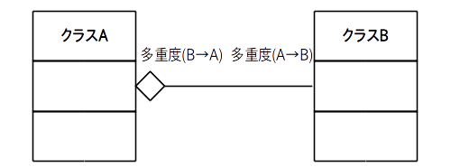
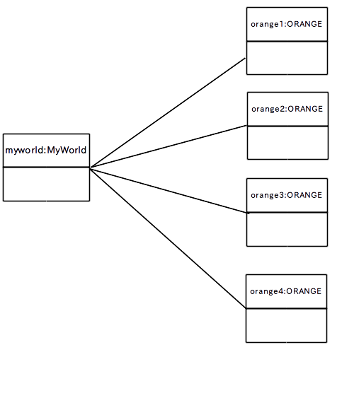

「多重度」の意味がピンと来ない人はまだ多いと思いますが、多重度は「オブジェクト図」を描くと理解しやすくなります。
「オブジェクト図」はクラス図の様にクラス間ではなく、プログラムが動作中のある時点で存在している実際のインスタンス(オブジェクト)間の関係を示す図(スナップショット)です。
1 つのインスタンスからなる単一オブジェクト図の描き方は次のようになります。

この様に、クラス名の隣に具体的なインスタンス名を記入します。
また属性名にはスナップショットを撮った時点における各フィールドの現在値を入れます。なお属性名は省略する場合もあります。
さてインスタンス間に関連がある場合はクラス図と同様にリンクで繋ぎますが「あるクラスのインスタンスから他のクラスのインスタンスに張るリンク数はクラス図の多重度と同じ数」になります。
例えば前のページの集約のクラス図の例
を元にして、各インスタンスを作った直後のオブジェクト図が次の図 3 です。

ORANGE クラスのインスタンス orange から見ると、 FUSA クラスのインスタンス fusa1、fusa2、fusa3、fusa4 へリンクが 4 本張られています。
つまり「orange は fusa1, fusa2, fusa3, fusa4 を持っている」ことを示しています。
逆に fusa1、2、3、4 から orange を見ると 1 本しかリンクが張られていません。
つまり「fusa1 は orange に含まれている」、「fusa2 は orange に含まれている」、「fusa3 は orange に含まれている」、「fusa4 は orange に含まれている」ことを示しています。
この様にオブジェクト図は多重度を理解するためには便利なツールなのですが、実際に動いているアプリやシステムではインスタンス数はリアルタイムに変化して不特定多数になることが多いので、オブジェクト図を設計時に事前に描くことは難しい場合があります。
よってエンジニアにはオブジェクト図を脳内で意識しながらクラス図を描くという技能が必要になります。